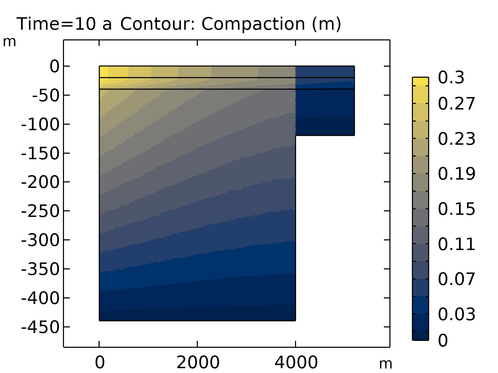

🏗️ Terzaghi Compaction

Variations in hydraulic head (surface plot) and fluid velocity (streamlines).
Soil might look still on the surface, but it is constantly adjusting to the weight above and the water within. This project zooms in on a classic geotechnical concept, Terzaghi's 1D consolidation theory. Through simulation using COMSOL Multiphysics, I explored how pore water pressure gradually dissipates when a load is applied, causing the soil to compact over time. It is a slow, almost meditative squeeze that reflects how structures, settlements, and groundwater systems are intertwined. Beyond the textbooks and equations, this model gives shape to the invisible adjustments happening beneath our feet every day.
Terzaghi compaction is a fundamental concept in soil mechanics describing how porous materials, such as aquifers and sediments, compact when fluid is withdrawn from their pore spaces. When groundwater is pumped, fluid pressure drops, causing the soil skeleton to bear more load and compact vertically. This process is crucial for understanding ground subsidence and aquifer behavior.
Key Concept
- Skeletal Specific Storage (Ssk): The volume of water released from storage per unit volume of aquifer per unit decline in hydraulic head. It directly relates to the compressibility of the solid skeleton.
Governing Equations
-
Fluid Flow (Darcy's Law):
Uses a modified Darcy's Law to describe water flow in a porous medium. The storage coefficient accounts for changes in fluid volume and pore space.
Sh ∂t/∂H + ∇·(−K∇H) = 0
In COMSOL, this is solved in terms of pressure (p) instead of hydraulic head (H).
-
Vertical Compaction Calculation (Postprocessing):
After fluid flow simulation, vertical compaction (Δb) is calculated:
Δb = Ssk · b · (−H)
Where H is the change in hydraulic head, b is aquifer thickness, and Ssk is skeletal specific storage.
Problem Setup
The model analyzes fluid behavior in three sedimentary layers overlying an impermeable bedrock with a step. Pumping from a lower aquifer causes hydraulic head to decline, and the model tracks this change and calculates resulting vertical compaction.
Figure 1: Geometry layout of boundaries and layers.
🧰 Data Handling and Interpretation
- Fluid Properties: Fluid density (ρf), fluid compressibility (χf).
- Porous Medium Properties: Skeletal specific storage (Ssk), hydraulic conductivity (Ks), porosity (ϵp).
- Boundary Conditions: Initial hydraulic head (H(0)), declining head boundary function (H0(t)).
📊 Results
Hydraulic Head and Velocity Field
Water flows towards the pumping location, with hydraulic gradients and velocities changing abruptly where sediments thicken at the bedrock step. This confirms the fluid flow response to the applied boundary conditions.
Figure 2: Change in hydraulic head (surface plot) and fluid velocity (streamlines).
This plot shows how hydraulic head (fluid pressure) changes and how water moves through the aquifer due to pumping. Streamlines indicate flow paths.
Compaction
Figure 3: Contour plot of the compaction after 10 years.
Areas with larger drops in hydraulic head and higher skeletal specific storage show greater compaction. The contour plot visualizes vertical compaction across sedimentary layers after 10 years.
🧠 Simplified Insights
- Uncoupled Approach: Fluid flow is solved first, then compaction is calculated. This is simpler computationally but doesn't capture feedback between deformation and flow.
- Vertical Compaction Focus: Terzaghi theory predicts vertical subsidence or compaction of the ground, not horizontal deformation.
- Practical Use: Widely used for preliminary ground subsidence assessments, especially when horizontal deformation is not a concern.
- Comparison to Biot Poroelasticity: Terzaghi does not predict horizontal strain, while Biot poroelasticity does. Biot's theory is more comprehensive for lateral ground movement.
This model provides a practical framework for understanding and predicting vertical compaction in aquifers and sediments due to groundwater withdrawal.
Key Features & Technologies
Key Features
- Uncoupled fluid flow and compaction calculation
- Visualizes hydraulic head, velocity, and compaction
- Supports scenario analysis for subsidence risk
Technologies Used
- COMSOL Multiphysics